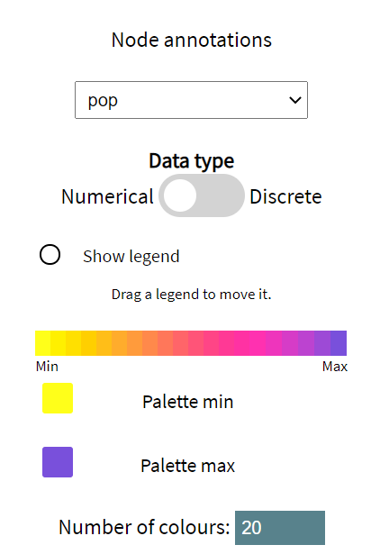
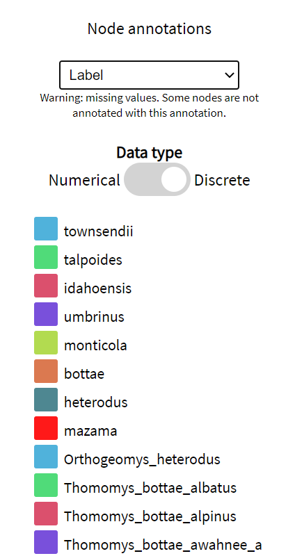

UglyTrees Guide
UglyTrees (UT) is a browser-based multispecies coalescent tree visualiser. This tutorial details some of its basic and advanced features.
Author: Jordan Douglas, School of Computer Science, University of Auckland
Author: Jordan Douglas, School of Computer Science, University of Auckland
1) Getting started
Upload a species tree file and optionally one or more gene tree files. These should be specified in Newick or NEXUS format. For some examples, see the main page uglytrees.nz. When ready, press Draw trees to begin!
UT requires that the species and gene trees are rooted binary trees. The height of a node is assumed to be its time $t$ (with the present day $t=0$ nodes being at the bottom of the graph). In a conventional multispecies coalescent depiction, the x-axis corresponds to effective population sizes in the species tree.
UT requires that the species and gene trees are rooted binary trees. The height of a node is assumed to be its time $t$ (with the present day $t=0$ nodes being at the bottom of the graph). In a conventional multispecies coalescent depiction, the x-axis corresponds to effective population sizes in the species tree.
1.1) Navigation
A multispecies coalescent model can be complicated, especially for large trees or multiple gene trees. Navigation through the model is easier with the arrow keys!
If there is more than one species/gene state uploaded (eg. a posterior distribution), the horizontal arrows (hotkeys: ← and →) navigate through the states, while the double horizontal arrows (hotkeys: ctrl + ← and ctrl + →) skip forward many states. The play button will animate through the list of states.
If there is more than one gene tree, the vertical arrows (hotkeys: ↑ and ↓) cycle through the list of gene trees. It is also possible to display more than one gene tree at a time using the Gene trees menu at the top. However, this may not look good for a large number of gene trees!
By mouse-scrolling (or pinching if mobile) and mouse-dragging (or panning if mobile), the graph can be zoomed in on and further navigated.
Alternatively, to focus on an area consider adjusting the x-axis and y-axis ranges (located in the View top menu).
If there is more than one species/gene state uploaded (eg. a posterior distribution), the horizontal arrows (hotkeys: ← and →) navigate through the states, while the double horizontal arrows (hotkeys: ctrl + ← and ctrl + →) skip forward many states. The play button will animate through the list of states.
If there is more than one gene tree, the vertical arrows (hotkeys: ↑ and ↓) cycle through the list of gene trees. It is also possible to display more than one gene tree at a time using the Gene trees menu at the top. However, this may not look good for a large number of gene trees!
By mouse-scrolling (or pinching if mobile) and mouse-dragging (or panning if mobile), the graph can be zoomed in on and further navigated.
Alternatively, to focus on an area consider adjusting the x-axis and y-axis ranges (located in the View top menu).
1.2) Downloading the figure
The figure can be downloaded as an SVG by opening the Save As dialog at the top of the main page.
1.3) Configuring visual settings
Use the View top menu to configure axis and annotation settings:
Annotations are read in from the input tree files and are automatically classified as numerical or discrete. Numerical settings are associated 2 colours: a palette min and a palette max. These default to the colour-blind friendly purple/yellow palette. Whereas, each value of a discrete annotation receives its own colour.
Use the Species tree and Gene trees top menus to configure visual settings of the respective trees. Shape sizes, line widths, and colourings can be set manually, or automatically set to the value of a meta-annotation. For example, the width of a line in the species tree could be proportional to the substitution rate of that branch under a clock model. Or, the colour of a gene tree leaf could be associated with some observed trait (eye colour: discrete; body mass: numeric; etc.) of the individual.


Annotations are read in from the input tree files and are automatically classified as numerical or discrete. Numerical settings are associated 2 colours: a palette min and a palette max. These default to the colour-blind friendly purple/yellow palette. Whereas, each value of a discrete annotation receives its own colour.
Use the Species tree and Gene trees top menus to configure visual settings of the respective trees. Shape sizes, line widths, and colourings can be set manually, or automatically set to the value of a meta-annotation. For example, the width of a line in the species tree could be proportional to the substitution rate of that branch under a clock model. Or, the colour of a gene tree leaf could be associated with some observed trait (eye colour: discrete; body mass: numeric; etc.) of the individual.
2) Web scraping
Any changes made to the visual settings of UT can be downloaded as a template (in .xml format). To do this, select
Save As from the main program. The settings can be restored by uploading the template from the Open menu.
Alternatively, UT can load a template file by scraping the web if the location of the template is provided in the URL. This is achieved two ways: by using either the 'w' (web) or the 'g' (GitHub) URL parameter.
This enables the sharing of multispecies coalescent visualisations with just one click.
The 'trees' section of the template file looks like the following:
Alternatively, UT can load a template file by scraping the web if the location of the template is provided in the URL. This is achieved two ways: by using either the 'w' (web) or the 'g' (GitHub) URL parameter.
2.1) General case (w)
Use the following URL:
www.uglytrees.nz/?w=http://website.com/template.xml
where http://website.com/template.xml is a web-location of an UT template.
2.2) GitHub (g)
Use the following URL:
www.uglytrees.nz/?g=OWNER/REPO/PATH/TO/template.xml
where OWNER is the owner of the GitHub repository REPO
and PATH/TO/template.xml is the path to the UglyTrees template from the
master branch root. Due to restrictions in the GitHub API, files larger than 1MB may not be retrieved.
For large files, the w parameterisation should be used.
<trees>
<species filename="species.trees" />
<gene filename="../trees/gene1.trees" />
<gene filename="http://www.uglytrees.nz/trees/gene2.trees" />
</trees>
In this example, one species and two gene tree files will be loaded into UT.
The second gene tree is scraped directly from the specified URL (http/https must be specified),
whereas, the species tree and the other gene are scraped from the relative directory (relative to
the template file specified by w or g).
However, due to security restrictions imposed by the web browser, if the template.xml file is uploaded
directly from local storage, relative tree files are ignored.
<species filename="species.trees" />
<gene filename="../trees/gene1.trees" />
<gene filename="http://www.uglytrees.nz/trees/gene2.trees" />
</trees>
3) Species to gene node mapping
In order to embed one (or more) gene trees inside a species tree, a mapping function between species leaves and gene leaves is required.
This function is automatically detected by UT by comparing species and gene leaf labels. The mapping algorithm attempts to map each gene leaf to exactly one species. This is achieved by substring comparison, and if that fails, the labels are
split using a range of delimiters (_, -, and .). If a mapping cannot
be found, the user is notified. Consider the following (simulated) nexus files:
If UT is unable to find a mapping, consider changing the gene/species labels to something like the above example.
species.nexus:
#NEXUS
Begin taxa;
Dimensions ntax=4;
Taxlabels
horse
seahorse
cat
catfish
;
End;
Begin trees;
Translate
1 horse,
2 seahorse,
3 cat,
4 catfish
;
tree STATE_0 = (((1[&pop=2.6]:0.03225324288335552,4[&pop=1]:0.03225324288335552)[&pop=3]:0.43392160615904984,3[&pop=1.2]:0.46617484904240536)[&pop=0.5]:0.3061633578277898,2[&pop=0.5]:0.7723382068701952)[&pop=0.5];
#NEXUS
Begin taxa;
Dimensions ntax=4;
Taxlabels
horse
seahorse
cat
catfish
;
End;
Begin trees;
Translate
1 horse,
2 seahorse,
3 cat,
4 catfish
;
tree STATE_0 = (((1[&pop=2.6]:0.03225324288335552,4[&pop=1]:0.03225324288335552)[&pop=3]:0.43392160615904984,3[&pop=1.2]:0.46617484904240536)[&pop=0.5]:0.3061633578277898,2[&pop=0.5]:0.7723382068701952)[&pop=0.5];
gene1.nexus:
#NEXUS
Begin taxa;
Dimensions ntax=6;
Taxlabels
horse_1
horse_2
seahorse_1
seahorse_7
cat_1
catfish_jerry
;
End;
Begin trees;
Translate
1 horse_1,
2 horse_2,
3 seahorse_1,
4 seahorse_7,
5 cat_1,
6 catfish_jerry
;
tree STATE_0 = (((((1:0.21108720449043908,2:0.21108720449043908):0.2680638042699739,6:0.479151008760413):0.12515560798169428,5:0.6043066167421073):0.538020168481041,4:1.1423267852231482):0.7086261037474311,3:1.8509528889705793):0.0;
In this example, horse_1 and horse_2 are mapped to species
horse, seahorse_1 and seahorse_7
are mapped to seahorse, etc. The use of _ delimiters ensures that
each gene is mapped to exactly 1 species, by preventing horse_1 from being mapped to seahorse.
#NEXUS
Begin taxa;
Dimensions ntax=6;
Taxlabels
horse_1
horse_2
seahorse_1
seahorse_7
cat_1
catfish_jerry
;
End;
Begin trees;
Translate
1 horse_1,
2 horse_2,
3 seahorse_1,
4 seahorse_7,
5 cat_1,
6 catfish_jerry
;
tree STATE_0 = (((((1:0.21108720449043908,2:0.21108720449043908):0.2680638042699739,6:0.479151008760413):0.12515560798169428,5:0.6043066167421073):0.538020168481041,4:1.1423267852231482):0.7086261037474311,3:1.8509528889705793):0.0;
If UT is unable to find a mapping, consider changing the gene/species labels to something like the above example.